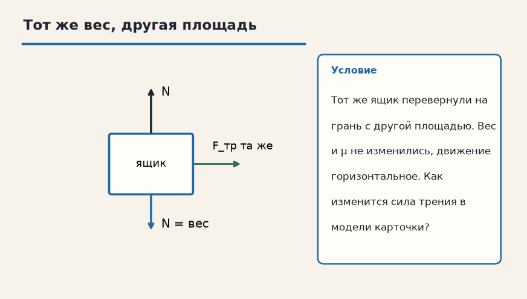

Механика · Силы в природе · 3.2
Сила трения
Лист для письменной работы: данные, перевод в СИ, искомая величина, ход решения, ответ. Ответов на листе нет.
1. Ящик, μ = 0,2
Ящик прижат к полу силой реакции 50 Н, коэффициент трения 0,2. Найди силу трения скольжения.

2. Тот же вес, другая площадь
Тот же ящик перевернули на грань с другой площадью. Вес и μ не изменились, движение горизонтальное. Как изменится сила трения в модели карточки?

3. Коэффициент 0,3
Тело прижато к горизонтальной поверхности силой реакции 40 Н. μ = 0,3. Найдите силу трения скольжения.
4. Коэффициент 0,5
N = 20 Н, μ = 0,5. Найдите силу трения скольжения.
5. Четверть
μ = 0,25, N = 80 Н. Найдите Fтр.
6. Площадь
Трение скольжения 12 Н. Тело перевернули на грань с другой площадью, N и μ не изменились. Как изменится Fтр в школьной формуле?
7. Масса и трение
На горизонтали N = mg. m = 4 кг, g = 10 м/с², μ = 0,2. Найдите силу трения скольжения.